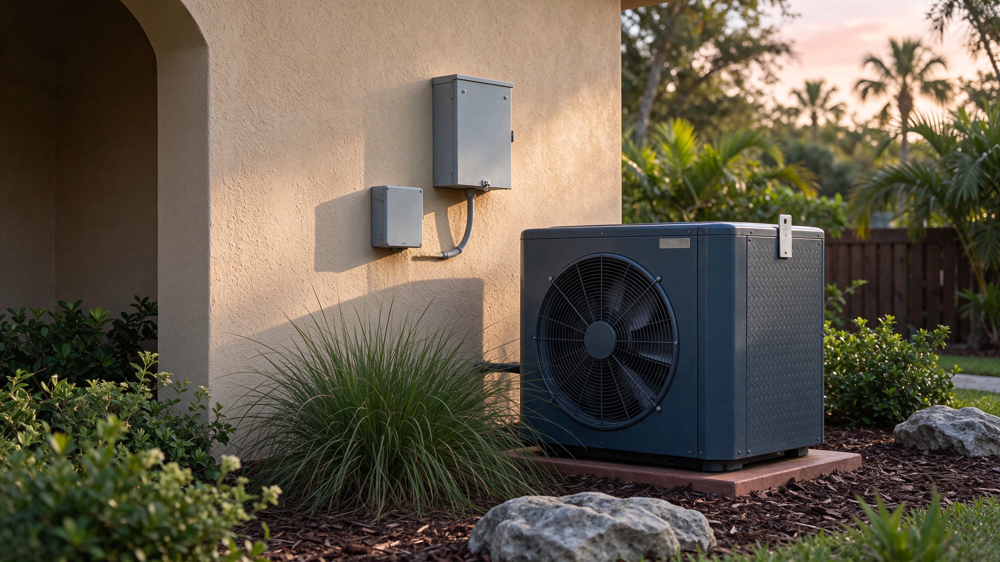

Current Overload and Voltage Surge Are Different Problems
An ordinary circuit breaker and a surge protective device address different electrical conditions. Current is the flow of electricity; voltage is the electrical difference that drives that flow. You do not need to measure either yourself to understand why the protective devices are not interchangeable.
Eaton explains that fuses and circuit breakers protect against current overloads, while surge protectors address voltage surges and spikes. Its surge guidance describes a surge as a short-duration voltage increase. This is a comparison of protective functions, not a diagnosis of an individual AC system. [1]
Adding a device for brief voltage spikes does not remove the need for the circuit's overcurrent protection. Conversely, seeing an ordinary breaker labelled for the AC does not establish that the equipment has surge protection. Ask what is actually installed instead of assuming one box performs both jobs.
A Surge Protector Is Not a Fix for a Tripping AC Breaker
If your AC breaker has been tripping, keep that complaint separate from a proposal to add surge protection. Eaton specifically states that surge protectors do not stop overload-related breaker trips. That does not establish that overload is the cause of your particular interruption; the equipment and its electrical supply still need assessment. [1]
Our repeated AC breaker-trip explanation addresses what to report and why repeated resets are not a workaround. A protective accessory should not become permission to restart an unresolved electrical problem. Leave a repeatedly tripped breaker alone and stop requesting cooling with normal thermostat controls if you can reach them without approaching damaged or wet equipment.
When booking AC repair, say whether you need an assessment of an existing interruption or are asking about additional surge protection. Those are different requests. Ask whether the equipment visit covers the concern and whether a qualified electrician is also needed for the branch circuit or electrical panel.
The Box or Breaker Shape Does Not Identify Every Function
A wall-mounted enclosure, a panel-mounted device or an indicator light is not enough information to identify the protection. Equipment can package functions differently, so this article's ordinary-breaker comparison should not be read as a claim about every combined-function product.
Use the installation record, product model and manufacturer documentation to establish what each device does. Ask the professional to distinguish the AC's overcurrent protection from any added surge function and identify the equipment that function serves. Do not remove a panel cover, open an AC cabinet or trace wiring to collect that information.
This distinction also matters when someone says the house is already protected. That phrase needs an explanation of the installed device and its scope, not an assumption that every electrical path or failure mode is covered.
Surge Protection Does Not Supply Backup Power
A brief voltage spike is not the same event as a loss of electricity. Tampa Electric separates transient surges from no-voltage outages and other power-quality disturbances. It identifies surge devices as equipment designed to minimize transient spikes, while discussing backup supplies separately for interruptions. [2]
Do not expect a surge protector by itself to keep the AC cooling through an outage. It is not a battery or generator. A product with additional power-conditioning or backup features needs its own description; the surge-protection label alone does not establish those capabilities.
If cooling stopped around a power disturbance, report what happened rather than calling every interruption a surge. Useful observations include whether other appliances lost power and whether the AC's behavior changed afterward. They provide context, not proof that a specific component was damaged.
Tampa Storm Concerns Do Not Make Protection Unlimited
Local power-quality guidance explains why the location and scope of protection matter. Tampa Electric warns that a nearby lightning strike can induce a surge on interior wiring that bypasses a primary device at the main service. Its example concerns layered protection for sensitive electronics, not instructions for choosing an AC accessory. [2]
For a Tampa or North Tampa home, this is a reason to ask a qualified professional what an existing or proposed installation covers. It is not a reason to assume every home needs the same product or that adding one device prevents all electrical damage.
Ordinary rain is another separate question. Our AC operation during rain article distinguishes normal weather exposure from lightning, flooding and damaged equipment. Do not approach outdoor electrical equipment during an active thunderstorm to inspect an accessory or its light.
Ask What the Proposed Device Adds
Before authorizing work, ask for the device's model, intended protective function and the equipment it will serve. Have the provider explain the installation scope, any separate electrical work and the instructions you should keep afterward. This article does not supply a universal AC device rating, mounting location or wiring specification.
If the recommendation follows a cooling failure, ask for the repair findings separately. A proposal can include both a diagnosed repair and additional protection, but the added protection does not establish the cause of the original failure. Our AC repair quote questions help separate the finding, authorized work and exclusions.
Keep the product instructions with your service records. If an externally visible indicator changes, follow that model's guidance and contact the installer without opening the enclosure. Do not apply a generic light-color rule from a household plug-in strip to a different hardwired device.
Frequently Asked Questions
Does a surge protector replace the AC circuit breaker?
No. Surge protection addresses brief voltage surges and spikes; an ordinary circuit breaker provides overcurrent protection. An added surge function does not eliminate the need for the circuit's overcurrent protection.
Will installing surge protection fix my tripping AC breaker?
Do not treat it as that repair. Surge protection does not correct an overload-related trip, and the trip alone does not establish its cause. Arrange assessment of the existing interruption rather than repeatedly resetting the breaker.
Will an AC surge protector keep cooling running during an outage?
Not by itself. Surge protection is not backup electrical power. Any battery, generator or additional power-conditioning capability must be established separately from the surge-protection function.
Does a whole-home surge device mean every AC electrical problem is covered?
No. Confirm the installed product and the scope of protection with a qualified professional. A surge device is not a guarantee against every electrical fault, every surge path or every cause of lost cooling.
Editorial Source Review & Publisher
Published by On The Way Heating & Air for Tampa and North Tampa homeowners. The cited sources support the protective-function comparison and local power-quality context; they do not select an AC accessory or diagnose your equipment. Dustin Miller began HVAC work with his father in 2006 and has helped build several service companies. That company background is not a claim that he inspected the illustrated installation.
Sources
- Eaton: Surge Protection Explained — general voltage-surge versus current-overload distinction. Its consumer-electronics examples and product ratings are not universal HVAC installation specifications.
- Tampa Electric: Power Quality — distinctions among power disturbances and the limits of primary service protection. Its commercial program examples are not an endorsement or an AC installation guide.